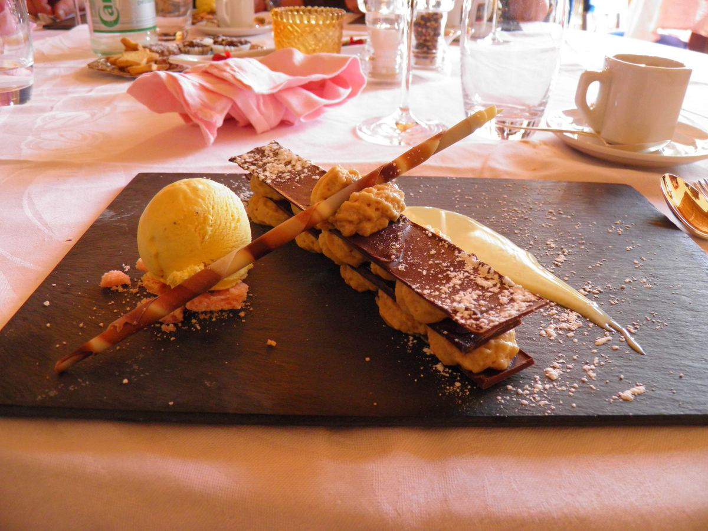

Friday Dining Hall Treat
Berry & Vanilla Cream Pastry
Flaky golden pastry layers filled with house-whipped vanilla cream and fresh berries—a Tudor House tradition.
Included with Lunch
Gates Mills Campus · Served Daily
Freshly prepared every morning by Gilmour Dining Services—featuring our hot main line, Lancer Grill, deli bar, and homemade soups.
Select your division: Upper & Middle School (Tudor House) · Lower School & Montessori
Available every lunch period with fresh-baked dinner rolls
Rotating pasta bar and build-your-own grain bowls
Main line classics, Lancer Grill burgers, and made-to-order deli sandwiches
Baked from scratch every morning in our campus kitchen

Friday Dining Hall Treat
Flaky golden pastry layers filled with house-whipped vanilla cream and fresh berries—a Tudor House tradition.
Included with Lunch
Available at all dining hall beverage stations
Lunch is included with tuition and served daily across Montessori, Lower, Middle, and Upper School lunch waves.
View Lunch Periods